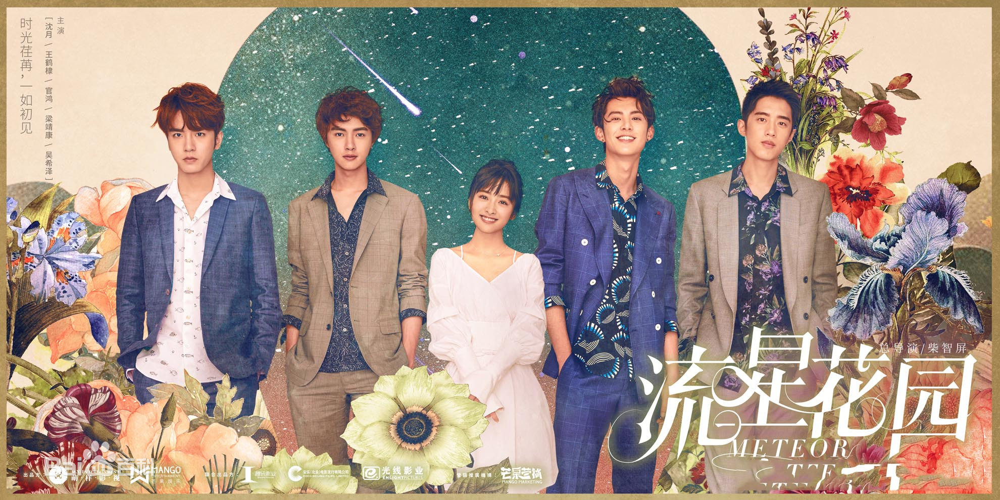

流星花園
《流星花園》是根據日本漫畫家神尾葉子創作漫畫《花樣男子》改編的言情青春偶像劇，由林合隆執導，沈月、王鶴棣、 官鴻、梁靖康、吳希澤、孫伊涵、孫千和厲嘉琪等聯袂主演，徐熙娣、王琳和郭采潔特邀出演，庾澄慶、李泉和王月友情出演。
董杉菜是一名資質平平但樂觀堅強的女孩，懷揣着把家裏的家廚事業做大做強的夢想，她奮力考上了心目中的理想大學明德學院的營養系， 開始了自己的追夢之旅，不料卻在陰差陽錯間，得罪了這所學校的風雲人物F4之首道明寺，徹底攪亂了自己的平靜生活。
F4是四個外表帥氣、品學兼優的大四男生，分別為道明寺、花澤類、馮美作和西門彥，四人均為橋牌界大神，被眾多同學視為榜樣、男神。 因為杉菜看不慣道明寺飛揚跋扈的模樣，仗義的杉菜與他產生了爭執，從此之後，道明寺常常惡作劇捉弄杉菜。之後一系列的事情發生， 使杉菜與道明寺之間的誤會逐漸的加深。但每到危急時刻，花澤類都會出現幫助杉菜並幫其解圍。
杉菜憑藉其雜草般頑強的生命力逐漸改變了這四個男生對其不好的印象，與他們的關係也逐漸緩和，變成了朋友，從平凡女生變成了全校同學的榜樣。 道明寺也因為在惡作劇杉菜的過程中，被她不屈不撓的樂觀天性所吸引，不知不覺的愛上了杉菜。兩個人經歷了重重阻礙，最終走在了一起，收穫了愛情。